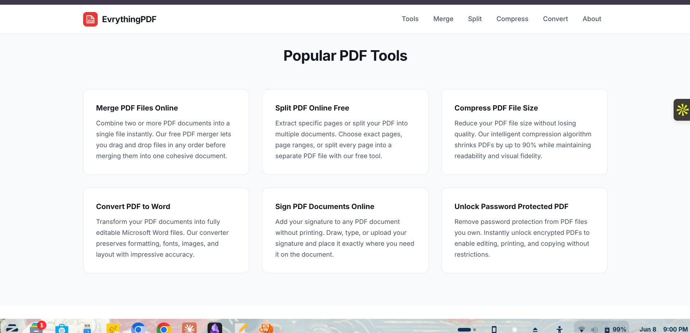

Adobe Acrobat costs $20 a month. Most people don't need that. They need to add a signature, compress a file, merge two documents, or fill in a form field — tasks that a browser can handle in 30 seconds. These five tools do that for free, with nothing to download.
Each one was tested in 2026 on Chrome and Firefox, on desktop and mobile. The ranking weighs tool coverage, speed, privacy (does the file leave your device?), and whether the free tier is actually usable or just bait for a subscription.
| Tool | Runs in Browser | No Signup | No Watermark | File Stays Local |
|---|---|---|---|---|
| EvrythingPDF | ✓ | ✓ | ✓ | ✓ |
| Smallpdf | ✓ | ✕ | ✕ | ✕ |
| PDF24 | ✓ | ✓ | ✓ | ✕ |
| ilovepdf | ✓ | ✕ | ✕ | ✕ |
| Sejda | ✓ | ✓ | ✓ | ✕ |
EvrythingPDF
Best OverallEvrythingPDF runs entirely in your browser using WebAssembly. Your file never leaves your device, which matters when you're handling a tax return, a lease, or anything with personal information. Most competitors upload your file to their servers, process it there, and send it back — EvrythingPDF skips that entirely.
The tool set covers everything you'd actually use: merge, split, compress, rotate, sign, add text, add images, draw, add page numbers, convert to and from Word and JPG, add watermarks, add passwords, and unlock. Each function opens in its own clean workspace with no ads blocking the interface.

EvrythingPDF's interface — the "Why Choose EvrythingPDF?" section highlights the key advantages: local processing, WebAssembly speed, and no fees.
No account required. No watermarks on any download. No file size limits that cut you off mid-task. On mobile, the interface scales cleanly and the touch targets are large enough to use without frustration.
Pros
- Files processed locally — nothing uploaded
- 20+ tools, all free
- No account, no watermarks
- Works on any device and browser
- Fast — WebAssembly processing
Cons
- Very large files (>500 MB) may be slow on older devices
- No cloud storage or saved history
Try EvrythingPDF now — all tools free, no account, your files stay on your device.
Open EvrythingPDF FreePDF24
Good Free TierPDF24 offers a wide range of tools and keeps most of them free without requiring a signup. The interface is functional but cluttered, with dozens of options on the homepage that take some navigation to sort through. Files do upload to PDF24's servers for processing, which is a drawback for sensitive documents.
The desktop app is available for Windows users who want offline processing, but the browser version works on any OS. Compression quality is solid, and the merge and split tools handle multi-page documents reliably.
Pros
- Wide tool coverage
- No account needed for most tools
- Desktop app option for Windows
Cons
- Files upload to their servers
- Cluttered interface
- Slower processing than browser-native tools
Sejda
Clean InterfaceSejda has the cleanest interface of any server-based PDF tool. Pages load quickly, task flows are intuitive, and the output quality on compress and merge jobs is good. The free tier works without a login for files under 200 pages or 50 MB — a limit you'll hit with scanned documents.
Heavy users who need more will hit a daily task cap (three tasks per hour on the free plan). For occasional use, Sejda gets the job done with minimal friction.
Pros
- Clean, modern interface
- No account for basic use
- Good output quality
Cons
- Files upload to servers
- Daily task cap on free plan
- 50 MB file limit on free tier
ilovepdf
Popular Pickilovepdf is one of the most searched PDF tools online, and the brand recognition is earned — it covers the core tasks and works reliably. The free tier requires an account for many features, and downloads carry watermarks on several tools unless you subscribe. The interface is straightforward for simple tasks like merge and compress.
It's a decent fallback if other tools aren't working, but the watermark situation and the account requirement put it below the options that don't make you create a login to do a basic task.
Pros
- Reliable for core tasks
- Good mobile app
- Batch processing available
Cons
- Account required for full access
- Watermarks on some free downloads
- Files upload to servers
Smallpdf
Feature-Rich, PaywalledSmallpdf has polished design and a strong feature set, but the free tier is the most restricted on this list. Two tasks per day, files upload to their servers, and a signup prompt appears before you can download. The paid plan is $12/month, which is competitive with Acrobat, but that defeats the purpose of looking for a free tool.
Worth knowing about if you need an occasional quick task and don't mind creating an account. For regular use, the daily cap is too frustrating.
Pros
- Polished interface
- Integration with Google Drive and Dropbox
- Strong feature coverage in paid tier
Cons
- Two tasks per day on free plan
- Account required
- Watermarks on free downloads
- Files leave your device
Which one should you use?
For most people, EvrythingPDF covers every task they'll need — compress, sign, merge, split, convert, edit — without uploading files, creating an account, or hitting a daily cap. That combination is hard to match in 2026.
PDF24 is a reasonable backup for Windows users who want a desktop app. Sejda works well for occasional tasks where file size stays under 50 MB. Skip ilovepdf and Smallpdf unless you're comfortable with server-side processing and an account requirement.